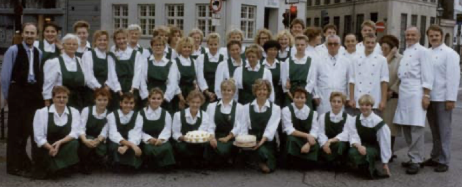

Historie
Vores historie
Der er mange gode anekdoter forbundet med La Glace. Prominente personligheder og andet godtfolk har i generationer bidraget med megen kolorit. Men det er i bund og grund Conditoriets håndhævelse af den faglige konditor-ekspertise der må have æren for, at vi stadig er at finde i Skoubogade.
Første generation
Grundlæggeren var Nicolaus Henningsen, der blev født i 1839 i Slesvig. I 1855 startede han i lære hos Konditor Georg Cantiery i Flensborg og blev udlært 4 år senere i 1859. 21 år gammel kom Nicolaus Henningsen i 1860 til København, hvor han arbejdede i forskellige kondi- torier. Samme år begyndte Henningsen sin opskrifts- bog, som er ført på tysk. Opskrifterne er samlet fra de forskellige arbejdssteder Nicolaus Henningsen var knyttet til. En del af opskrifterne er stadig i brug den dag i dag i La Glace. I 1870 åbnede han den 8. oktober sin forretning i kælderen i Skoubogade 3 under navnet "Henning- sens Kælder". Nicolaus Henningsen giftede sig med Anina Jørgens- en i 1871, og 1874 fik de sønnen Nicolaus, to år senere kom sønnen Theodor til. Desværre døde den ældre Nicolaus Henningsen allerede få måned- er efter sønnens fødsel i 1876 - kun 6 år efter grundlæggelsen.
Femte generation
Efter 11 år som indehaver solgte Merethe Stage- torn Conditori La Glace til sin datter Marianne Stagetorn den 1. juli 1989. Marianne Stagetorn var på det tidspunkt 22 år og i gang med at ud- danne sig til handelsakademiøkonom i detail handel og blev færdig hermed i 1990. Hurtigt indså hun, at dette var et livsjob og påbegyndte derfor allerede i 1990 konditoruddannelse i La Glace og et lille års forløb faldt alle brikker på plads. Merethe Stagetorn havde ingen erfaring med at drive konditori, men takket være mange trofaste med- arbejdere ledet af chefkonditor Ebbe Jepsen, der havde været i La Glace i en årrække, blev forret- ningen drevet videre i samme ånd. Merethe Stage- torn engagerede sig dybt i alle konditoriets tradi- tioner og var levende interesseret i alt hvad konditorverdenen bragte hende af viden. For første gang i historien var ægtefællen ikke inddraget i det daglige virke i Conditori La Glace.
